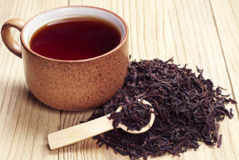
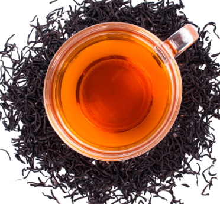

Black Tea

Black Tea is generally bolder and stronger in taste than green tea. It has a rich flavour with a distinct bouquet and aroma and a dark red or brown hue. When brewed correctly it has a balanced and smooth taste that is full of natural goodness and perfect for everyday drinking. Black tea is the variety of tea that has gone through the standard manufacturing process of withering, rolling, fermentation and drying. It is the fermentation process of the fresh tea shoots that gives the tea its recognisable black colour. Black tea has antioxidants which helps towards a healthy lifestyle, with benefits said to include, a lower risk of diabetes, healthy bones, increased energy and stress relief, if consumed on a regular basis.
Benefits of Black Tea
- Has antioxidant properties -
- Black tea contains a group of polyphenols that have antioxidant properties. Consuming antioxidants may help decrease the risk of chronic disease and improve your overall health.
- May boost heart health -
- Black tea contains flavonoids, which are beneficial for heart health. Studies have found that regularly drinking black tea may help reduce the risk of heart disease.
- May lower “bad” LDL cholesterol -
- LDL and HDL are two types of lipoproteins that carry cholesterol throughout the body. Too much LDL in the body can increase the risk of heart disease and stroke. Studies have found that black tea may help reduce LDL levels, but results are mixed.
- May improve gut health -
- The gut houses trillions of bacteria and the majority of your immune system. Polyphenols and antimicrobial properties found in black tea may help improve gut health and immunity.
- May help reduce blood pressure -
- High blood pressure can cause many health complications. Drinking black tea on a regular basis may help decrease systolic and diastolic blood pressure.

For more information, Click the above Black Tea Cup